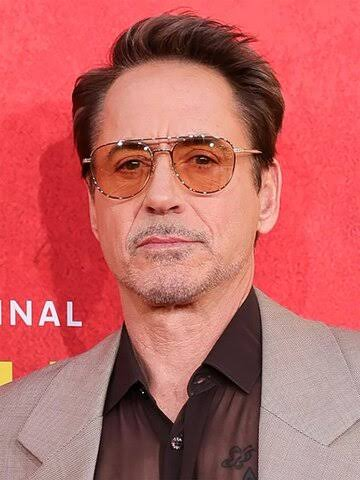

Ласкаво просимо!

Він став обличчям супергеройської епохи як Залізна людина, але довів свій геній далеко за межами блокбастерів. Жива легенда кінематографа — неповторний Роберт Дауні-молодший.
Найбільшу популярність йому принесла роль Тоні Старка, також відомого як Залізна людина, у фільмах кіновсесвіту Marvel.
Дізнатися більше